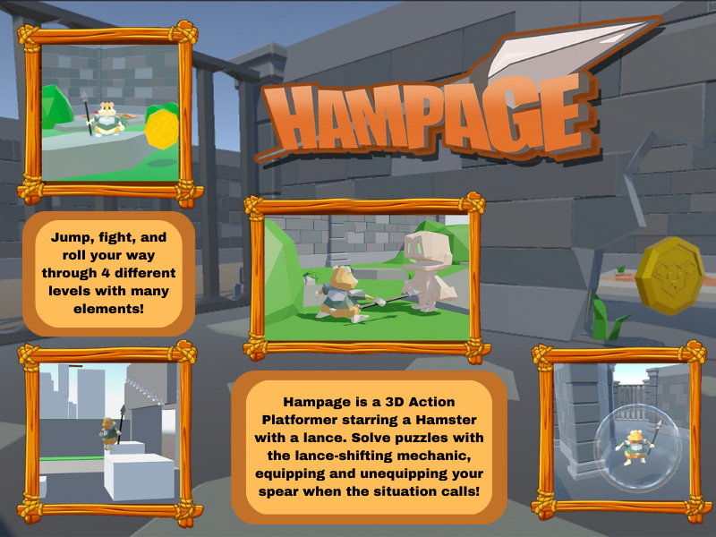

Hampage (In-Development)
As part of my requirements to graduate with my Computer Science degree, a year-long Senior Project is required. This game is the result. I serve as Project Lead, Gameplay Programmer, and Character Designer for this 3D Action-Platformer game. I have made use of many of the programming paradigms I've learned throughout the course of my degree for this game. Namely, different Design Patterns, Data Structures, and Algorithms have been implemented from my knowledge of past courses. I am chiefly responsible for the movement, physics, health system, combat, enemy systems, and player attacks. Nominated for the Senior Project Expo, will see a demo release on May 5th 2023. Developed in Unity, written in C#
Release Date: Summer 2023.
Platform: PC